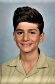

About me

My hobbies and Interests
- I have been playing guitar for over a year. My favourite song I have learnt would probably be Stairway to heaven by Led Zepplin. Right now I am learning Autumn Leaves by Paul Desmond.
- I have always been really intrested in computers from tinkering with settings to opening them up. When I was 10 I built my first desktop computer and it was a really fun and informative experience.
- I enjoy playing video games especially with my friends. My favourite games would have to be minecraft and roblox because I played them so much when I was younger but games like the just cause series and the uncharted series are pretty good.
- While I am not particularly great at sports I enjoy staying fit. Prior to the Corona virus outbreak I would swim three times a week and go to a taekwondo class twice a week.
- I want to graduate high school complete my HSC's to a high degree of effort.
- After graduating school I want to get a career in the wide array of IT courses. I am particulalry intrested in network security and web design.
- I want to conitinue playing guitar casually for most of my life and to be able to play most songs.
- As I continue to grow older I would like to maintain fit and continue swimming regularly.